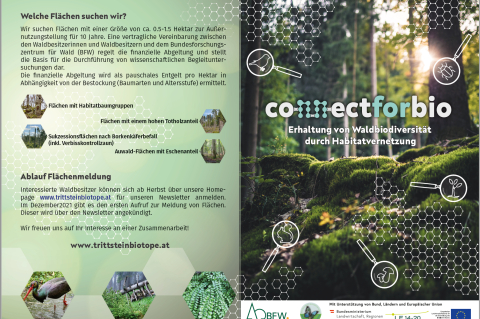

Downloads
-

Rapid Biodiversity Assessment – Anleitung für Felderhebungen
Die Anleitung zur raschen Erfassung der Waldbiodiveristät (engl. Rapid Biodiversity Assessment) beinhaltet die Methodensammlung für die Felderhebungen. in deutscher und englischer Sprache- -
Der Folder zu „ConnectForBio“ ein PDF
Der Folder gibt einen Einblick in das Projekt ConnectForBio, die Ziele, sowie die gesuchten Flächenschwerpunkte. -

Maßnahmenkatalog zur Förderung von Biodiversität im Wald
Gemeinsam mit Vertretern aus Forstwirtschaft und Naturschutz hat das BFW einen Maßnahmenkatalog entwickelt. Darin enthalten sind 14 Maßnahmen zur Erhaltung und Förderung der Biodiversität im Wald. -
Download Nr 4 in h4 white ein Bild (mit screenshot)
optional ein kleiner Text. Nur wenn gewünscht und dann nur beschränkte Zeichen … -
Download Nr 1 in h4 white - ein Logo mit screenshot
optional ein kleiner Text. Nur wenn gewünscht und dann nur beschränkte Zeichen … -
Download Nr 1 in h4 white - more docs with screenshot
optional ein kleiner Text. Nur wenn gewünscht und dann nur beschränkte Zeichen … -
Download Nr 1 in h4 white - ein zip
optional ein kleiner Text. Nur wenn gewünscht und dann nur beschränkte Zeichen …